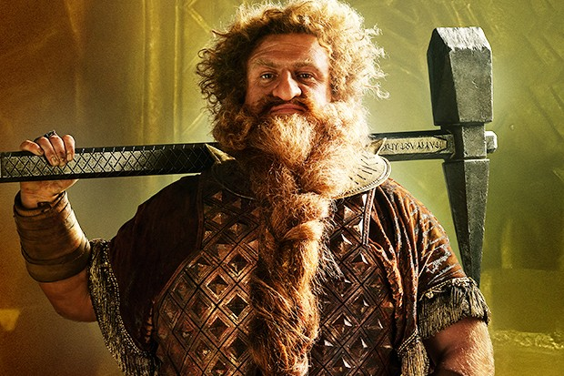
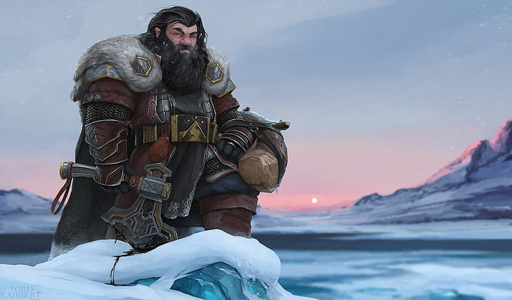
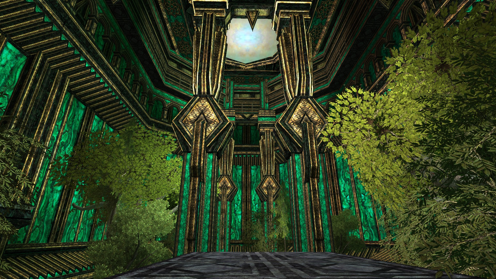
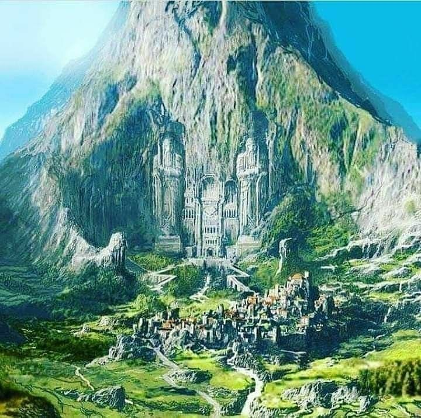

Королівство гномів - це місце, де зберігається велика історія і таємниця цих маленьких, але завзятих створінь. Вони завжди були майстрами в обробці металу та видобутку дорогоцінних каменів, і їхні розкопки розкривають незліченні скарби, що датуються століттями. Королівство гномів відоме своєю відданістю родовому королю і його сім'ї, а також майстерністю в гірництві та ковальстві.
Гноми - це майстри ремесел і мистецтва. Вони виготовляють найкраще оружжя та броню, а їхні заводи відомі своєю виробничою якістю. У королівстві гномів також шанують музику та танці, і гномські балади розповідають про подвиги героїв та скарби, які вони знайшли у глибинах землі.
Гноми живуть в кам'яних містах, висічених у горах. Їхні споруди вражають своєю міцністю та красою. Тут є палац короля, майстерні, крамниці, таверни та різноманітні житлові споруди. Гноми відомі своєю здатністю створювати надійні та безпечні місця для життя.
Природа королівства гномів - це дивовижні гори та печери, які приховують багатства та таємниці. Гноми також вірять в магію та духовний світ природи. Вони розуміють, як зберігати баланс у своєму середовищі та використовувати природні ресурси розумно. Ці тексти можуть бути використані для заповнення кожної з 4 колонок на вашому сайті про королівство гномів. Не забудьте також додати відповідні зображення та інші елементи оформлення, щоб зробити вашу сторінку більш візуально привабливою.
